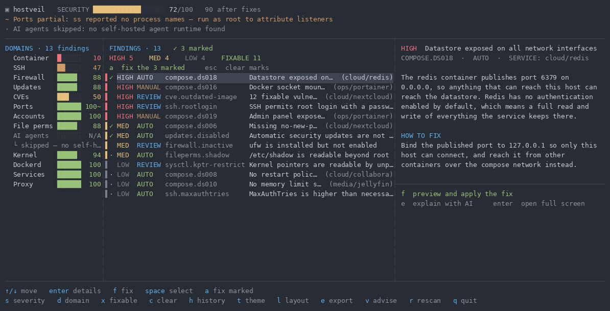
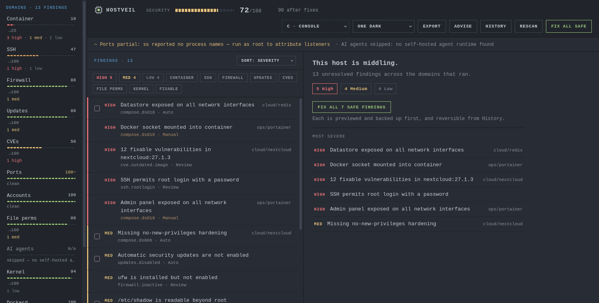

Stop cross-referencing scanner output.
Trivy, Lynis, and Compose findings land in one table with severity, source, service, remediation kind, and a capped 0-100 score.
Local security scanner for self-hosters
hostveil combines Docker Compose audits, Trivy image CVEs, and Lynis host hardening into one scored snapshot. It runs locally, needs no cloud account, and ships fixes with rollback.
curl -fsSL https://raw.githubusercontent.com/seolcu/hostveil/main/scripts/install.sh | bash
hostveilWhy hostveil
Successful security tools make the next step obvious. hostveil turns scan output into a prioritized queue with concrete fixes, warnings, and recovery points.
Trivy, Lynis, and Compose findings land in one table with severity, source, service, remediation kind, and a capped 0-100 score.
Every automated fix shows the action first. File edits save checkpoints, and risky choices are marked for review instead of hidden behind a magic button.
The scanner reads local Compose files, image metadata, and host configuration. Results stay on the machine unless you export them.
The AI brief is a local Markdown prompt with prioritized findings, prompt-injection guidance, and redacted evidence for ChatGPT, Claude, or a local LLM.
Coverage
Most self-hosting incidents are boring: a privileged container, a public admin panel, an unpatched image, SSH left too open. hostveil checks those paths together.
Privileged mode, host networking, Docker socket mounts, exposed datastores/admin panels, missing no-new-privileges, unsafe bind mounts, missing healthchecks, and hardcoded secrets.
Trivy scans the container images your Compose services actually run and maps patched versions into fix guidance.
Lynis checks SSH, firewall, kernel settings, file permissions, audit/logging, and other Linux host controls.
Product
Run the TUI by default, or serve the same scan state over localhost when a browser is better for review.


Workflow
Run hostveil on a Linux Docker Compose host. Missing Trivy or Lynis is skipped gracefully.
Sort by severity, source, service, remediation kind, or score impact. Clean scans show Clean instead of pretending at certainty.
Use Auto for clear fixes, Review for alternatives, and Manual when the tool should guide instead of mutate.
Fix checkpoints keep edited files recoverable through hostveil rollback.
Install
The installer downloads the release binary, verifies checksums, installs hostveil, and sets up Trivy and Lynis when possible.
# Install or update hostveil
curl -fsSL https://raw.githubusercontent.com/seolcu/hostveil/main/scripts/install.sh | bash
# Terminal UI
hostveil
# Web UI on localhost
hostveil serveFAQ
No. hostveil runs locally. Exports are files you explicitly download or save.
You can. hostveil adds Compose checks, one scored snapshot, UI workflows, registered fixes, and rollback.
It is a Review fix, not Auto. hostveil shows independent alternatives and makes you choose.
Yes. hostveil serve starts the Web UI on 127.0.0.1:8787 by default.